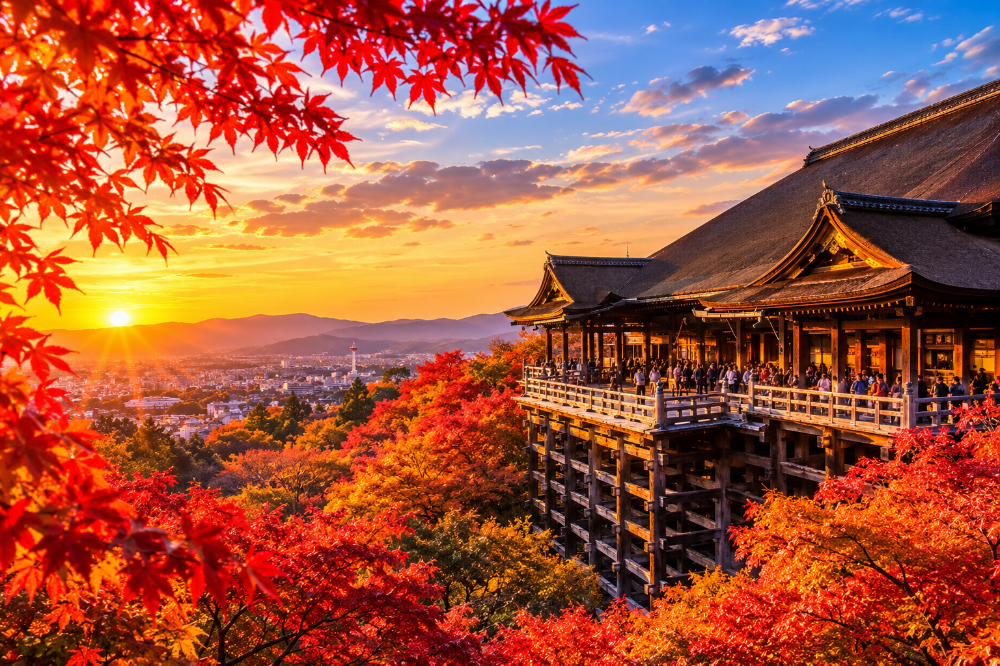
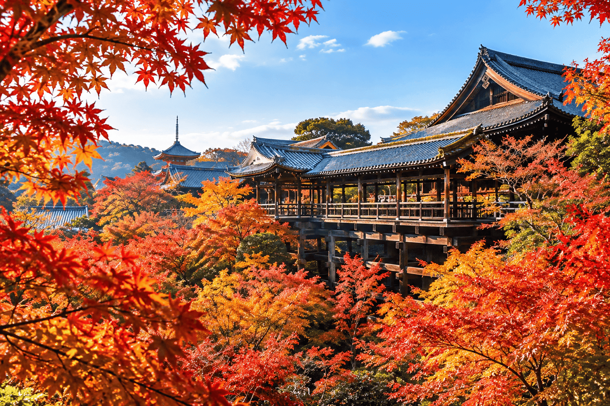
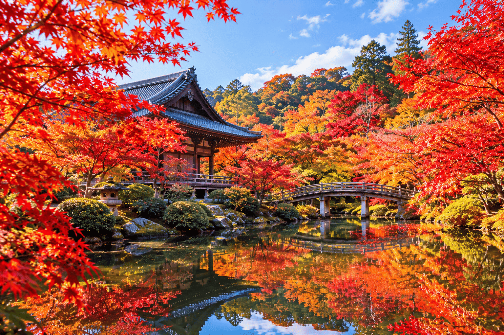
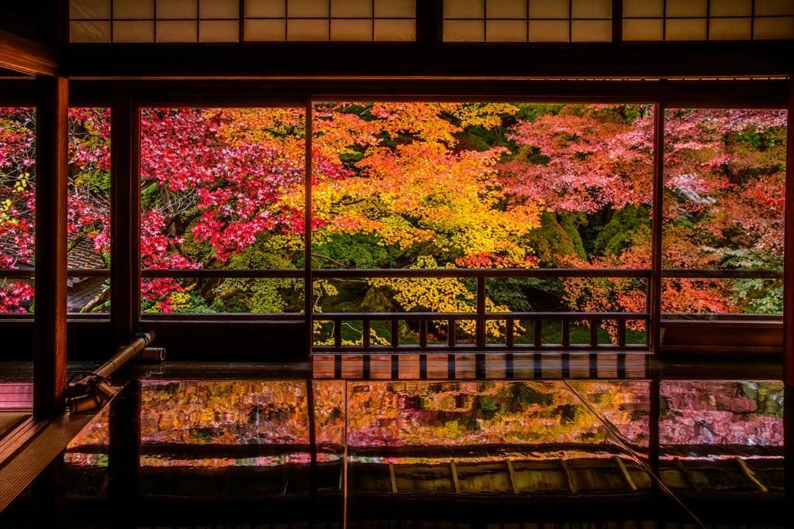

秋に行きたい京都の場所
美しい景色と歴史を楽しむ旅へ。
清水寺（きよみずでら）
清水寺は、京都を代表する有名なお寺の一つです。 高い舞台からは、京都の町や周囲の自然を眺められます。
秋には木々が赤や黄色に色づき、 歴史ある建物と美しい紅葉を一緒に楽しめます。

東福寺（とうふくじ）
東福寺は、京都でも特に有名な紅葉の名所です。 秋になると、境内の木々が赤やオレンジ色に染まります。
通天橋から眺める紅葉の景色はとても美しく、 京都の秋を感じたい人におすすめの場所です。

嵐山（あらしやま）
嵐山は、山や川などの自然を楽しめる人気の観光地です。 渡月橋からは、秋色に染まった山々を眺められます。
川沿いを散歩したり、お店を訪れたりしながら、 ゆっくりと京都の秋を楽しめます。
永観堂（えいかんどう）
永観堂は、「もみじの永観堂」として知られる、 京都を代表する紅葉の名所です。
境内の庭園や池の周りでは、 赤や黄色に色づいた美しい景色を楽しめます。 秋の京都を訪れるなら、ぜひ見ておきたい場所です。

瑠璃光院（るりこういん）
瑠璃光院は、美しい紅葉と庭園で知られる人気の場所です。 室内から眺める景色や、机に映る紅葉が有名です。
静かな雰囲気の中で、京都ならではの 秋の美しさをゆっくり味わえます。 秋の特別公開については、事前に確認しましょう。
